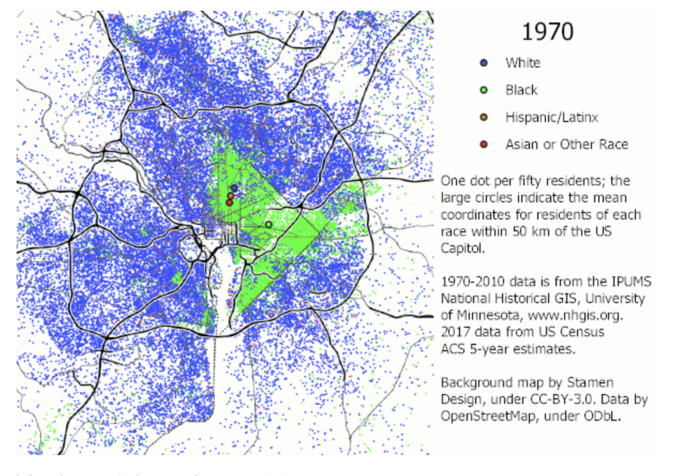

Honors Introduction to Data Science Portfolio
 Avery Bernard Johns is a sophomore History and Sociology double major
with a Data Science minor at Howard University and a member of the
Humanities and Social Sciences Scholars Pathway-to-PhD Program.
Avery’s academic trajectory is oriented toward a dual JD–PhD in Forensic Anthropology and
the creation of public-facing data tools that illuminate structural inequality and spatial patterns of harm.
Avery Bernard Johns is a sophomore History and Sociology double major
with a Data Science minor at Howard University and a member of the
Humanities and Social Sciences Scholars Pathway-to-PhD Program.
Avery’s academic trajectory is oriented toward a dual JD–PhD in Forensic Anthropology and
the creation of public-facing data tools that illuminate structural inequality and spatial patterns of harm.
This portfolio curates exploratory data analysis (EDA) projects completed in Honors Introduction to Data
Science. Each project moves from raw data to clear, interpretable visuals that support questions about
housing affordability, displacement, and social stratification.
Python · Pandas · NumPy
Jupyter Notebooks
Matplotlib · Plotly
Exploratory Data Analysis
Housing & Inequality
Technical Toolkit
Core tools used to wrangle, analyze, and visualize data in these projects:
- Python and Jupyter Notebooks
- Pandas, NumPy, (GeoPandas where applicable)
- Matplotlib, Plotly, Seaborn
- Git and GitHub for version control and publishing
Analytical Approach
Emphasis on transparent and reproducible analysis:
- Data cleaning, validation, and documentation
- Summary statistics and trend identification
- Time-series, comparative, and distributional plots
- Basic choropleth mapping and spatial breakdowns
Substantive Focus
Quantitative analysis grounded in real-world questions:
- Housing affordability and price dynamics
- Urban inequality and neighborhood change
- Census-based demographic patterns
- Connections between data, law, policy, and history

Global House Price Index (2010–2020)
Mortgage Rates
Affordability Ratios
Animated Visualizations
This final project analyzes worldwide housing price indices, mortgage rates, and affordability trends
from 2010–2020. Animated bar charts, time-series visualizations, and a global choropleth map highlight
how national housing markets change over time.
The project translates complex multi-country datasets into intuitive visual summaries that surface
inequality, volatility, and long-run housing patterns, with particular attention to regions under the
greatest affordability strain.

Washington, D.C. Census Data
Neighborhood-Level Analysis
Demographics & Income
Housing Costs
The DC Census Portfolio examines demographic, economic, and housing variables across
Washington, D.C. neighborhoods using publicly available Census data. The analysis focuses on how age,
race, income, and housing costs vary across the District.
The project builds core skills in
data cleaning, summary statistics, exploratory visualization, and geographic breakdowns.
Through plots, tables, and map-based graphics, it turns raw Census figures into accessible visual
patterns that make local inequality easier to see and discuss.
This portfolio highlights data-driven projects that move from raw datasets to clear, interpretable insights about
housing, affordability, and urban inequality.
- Clear, transparent, and reproducible analysis
- Visuals that support—rather than replace—interpretation
- Projects grounded in real social and spatial questions
- Accessible to both technical and non-technical audiences